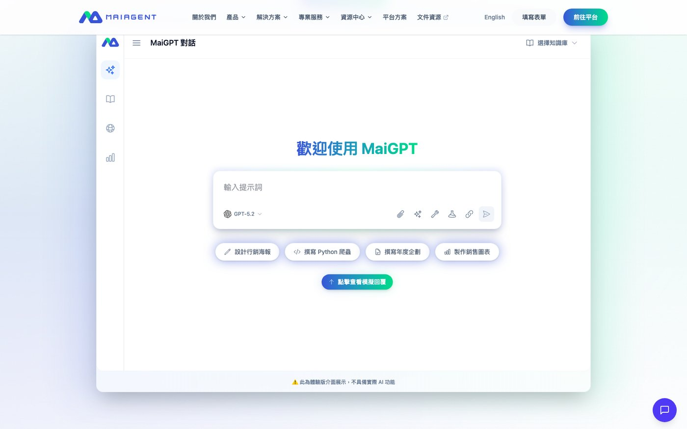
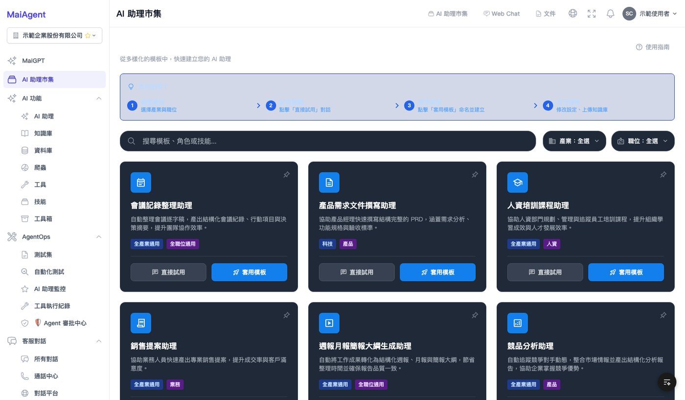
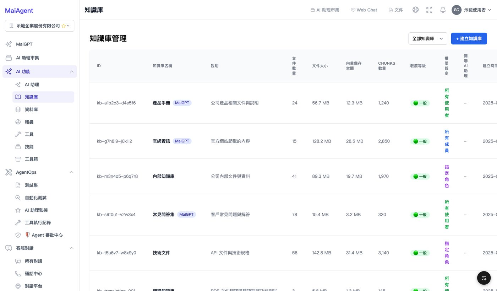
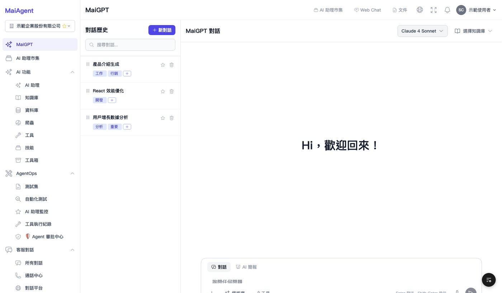

公司的企業 AI 平台，使用者是導入 AI 的企業客戶與其內部管理者。我負責前端的產品功能規劃與實作。
第一階段為進階功能：模板管理、對話分享、知識庫建置流程。知識庫的建立入口原本分散於多個頁面，整併為單一入口，並加入空狀態引導與完成後自動返回。模板庫後續再進行一輪功能強化。
第二階段為 AI Store 改版與 Skills 整合：重整技能分類、改為分層顯示，並將頁面層級由六層精簡至三層。另新增詳情概覽頁籤與重新設計的篩選器。
功能之外亦負責規格文件：對話分享與 Prompt 模板庫兩份 PRD。對話分享另撰寫簡化版與極簡版：完整版範圍過大，無法於單一開發週期完成，最終以極簡版排入實作。產品功能表則在確認前一版係依文件推測撰寫後，實際操作後台每項功能重新編寫。
開發以 AI 輔助（Claude Code）進行。



